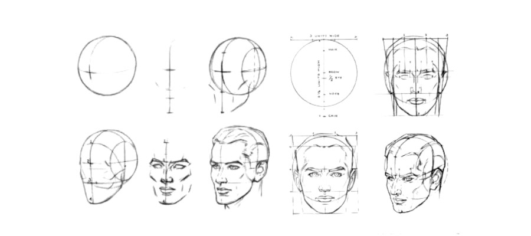
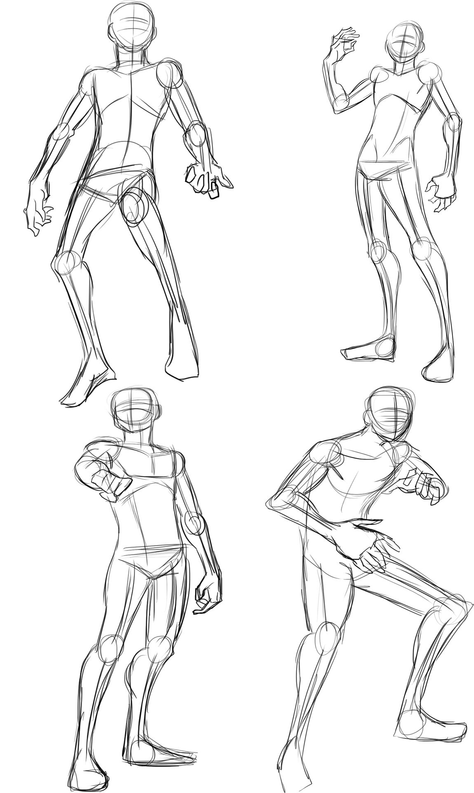

Início
Esboços
LineArt
Pintura
Início
Esboços
LineArt
Pintura
Bom, de acordo com o dicionário: 1. conjunto dos traços iniciais, ger. provisórios, de um desenho, de uma obra de arte. "o pintor preparava o e. de sua nova paisagem" 2. qualquer trabalho ou obra em estado inicial, apenas delineada ou esboçada. "fez o e. de seu filme num sábado"
E como podemos iniciar um esboço, já que é asim tão simples?
Existem várias e várias técnicas para um bom esboço, seja ele de perspectiva, seja de anatomia humana, sendo de corpo ou cabeça, porém, não iremos adentrar muito em nenhum deles, apenas temos que tomar como princício básic, o fundamento de que, esboços são baseados em (na maioriaa dos casos), formas simples.
Então, entramos na prática, é excencial, você ter em mente essas "formas básicas", como círculos, quadrados, retângulos, cilindos, entre outras, nessa linha de raciocínio.
Como você imagina que se dê para iniciar desenhando uma cabeça humana, falando em questões de anatomia humana, e tendo em vista o parágrafo anterior? SE a sua resposta foi um circulo, parabéns, o conceito básico de esboço foi compreendido!
 